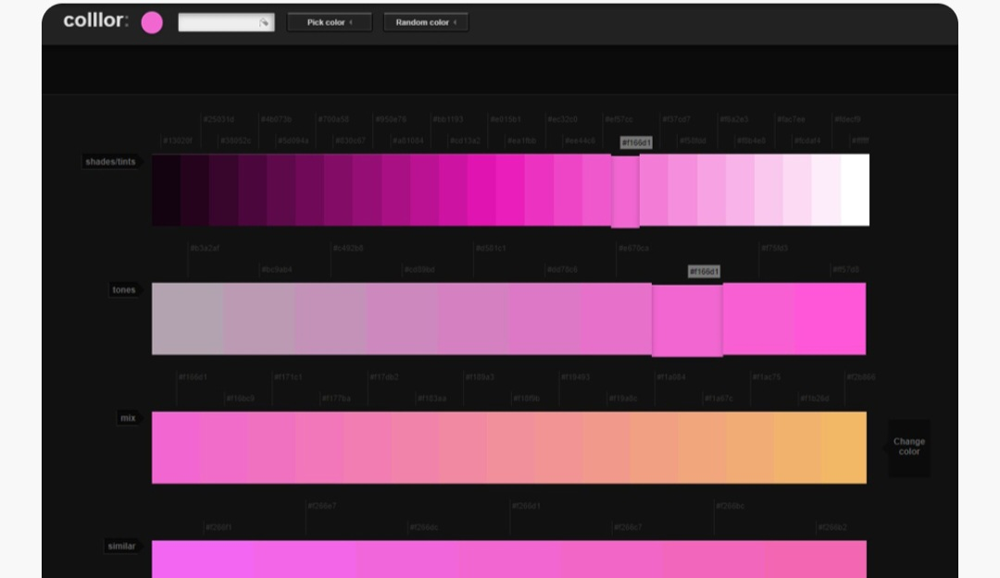
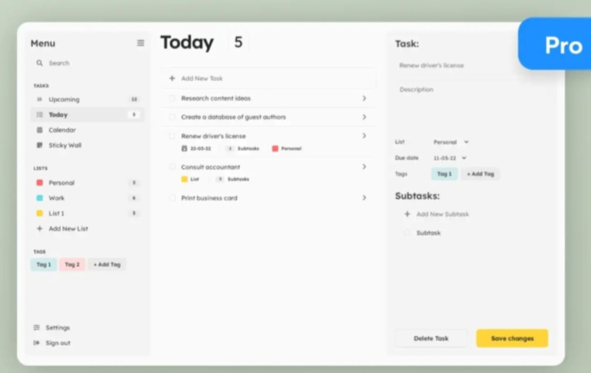

Online Code-Editor
A web-based real-time code editor that supports collaborative coding. Built using the MERN stack, with Monaco Editor for syntax highlighting and real-time updates via WebSockets.

A web-based real-time code editor that supports collaborative coding. Built using the MERN stack, with Monaco Editor for syntax highlighting and real-time updates via WebSockets.
A personal portfolio website showcasing my skills, projects, and experiences as a Java developer and ethical hacker. The site features a clean and modern design, making it easy for visitors to navigate and view my work.

Welcome to Coffee Shop, your ultimate destination for savoring exquisite coffee blends! This website features a responsive design, interactive homepage, detailed menu section, customer reviews, and an online table booking form.

The Color Flipper website is ideal for practicing JavaScript fundamentals such as DOM manipulation, event handling, and dynamic styling. It's a small but satisfying project that helps developers improve their coding skills.

A web-based resume builder that allows users to create and customize resumes using LaTeX templates. Features live preview and PDF generation, built with React, TypeScript, and styled-components. Integrated Axios for API communication.

The To-Do List website is an excellent project for understanding CRUD operations (Create, Read, Update, Delete), DOM manipulation, and data persistence techniques. It can also be expanded to include advanced features like deadlines, categories, reminders, or syncing with cloud services.
